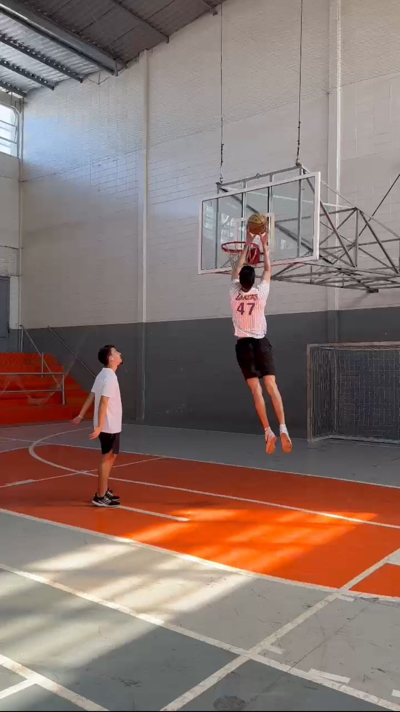
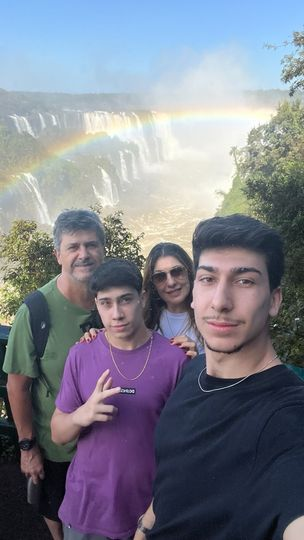
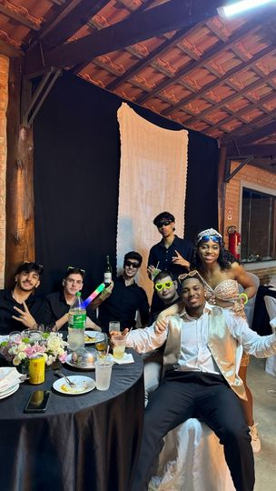

Ir para a academia começou a fazer parte da minha rotina
desde junho de 2021, prioritariamente comecei com o intuito
de melhorar meu corpo pois eu era muito alto e magro, assim ao longo do
tempo criei um carinho pelo esporte e nunca mais larguei desde então.
2.Basquete

Desde novo sempre fui o maior da turma, assim sempre me perguntavam se
eu jogava basquete e com o incentivo do meu pai e treinador, comecei no esporte,
assim joguei por alguns anos disputando até regionais, porem após entrar na faculdade
diminui a frequência a frequência mas continuo jogando.
3.Viajar

Como gosto de conhecer pessoas novas viajar sempre fez parte da rotina,
conhecer culturas e locais novos sempre me intrigavam.
4.Sair

Sair com os meus amigos sempre fez parte da minha rotina, pois
depois de uma semana cansativa, sair com eles para jogar um papo fora,
sempre foram uma parte relaxante da semana.